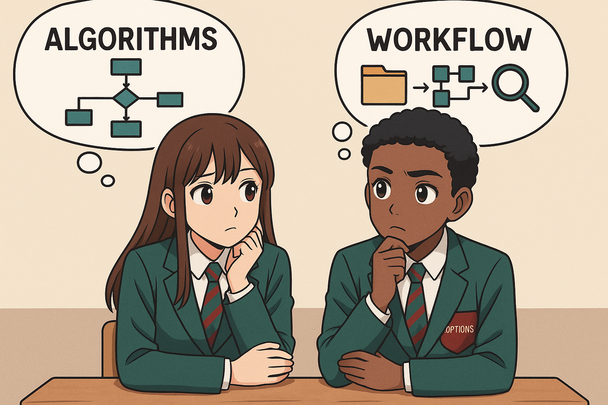

Lesson 2 – Problem-Solving: Algorithms (CS) vs Workflows (IT)
Do Now

Let’s warm up by recalling what we learned last time!
True
a) The order of steps and decisions needed to complete a task
b) The list of usernames and passwords for a system
c) The types of devices connected to a network
d) The amount of storage space available on a computer
a) The order of steps and decisions needed to complete a task
software/programs/technology
What you’ll learn today
By the end of this lesson, you will be able to:
- Define an algorithm and a workflow.
- Spot real-life examples of each (school, home, apps).
- Explain where CS and IT problem-solving overlap.
How you’ll know you’ve got it:
- Write a short algorithm with at least one decision.
- Create a simple workflow another student can follow.
Knowledge Recap
🧠 Computer Science – Flowcharts & Decisions
A flowchart shows the steps of an algorithm using symbols and arrows. It helps programmers plan and check logic before writing any code.
- Each shape means something: oval = start/end, parallelogram = input/output, diamond = decision.
- Arrows show the flow of control — the order that steps happen in.
- Decisions use Yes / No branches (like “If it’s raining → take an umbrella”).
🪄 Analogy: A flowchart is like a choose-your-own-adventure story — every time you reach a choice, you follow a new path until you reach the ending.
📋 IT – Digital Forms & Data Flow
In IT, forms collect and pass information through a workflow automatically.
- Digital forms make data entry faster and reduce mistakes.
- They can trigger actions — like sending emails or saving results to a spreadsheet.
- Well-designed forms are short, clear, and include validation (checking the answers make sense).
🪄 Analogy: A form is like a mail sorter — each answer goes into the right slot so the information ends up where it belongs.
Key Vocabulary
- Algorithm
- A precise, step-by-step method a computer can follow to solve a problem.
- Workflow
- The ordered sequence of tasks people and tools follow to complete work.
- Decision
- A yes/no (boolean) branch that changes which step happens next.
- Input / Output
- Information that goes into / comes out of a system or process.
CS Activity – Design a Flowchart
Today you will create a very simple flowchart
- The shapes include:
- Oval = Start / End
- Parallelogram = Input / Output
- Diamond = Decision (Yes / No question)
- Rectangle = Action / Process
- A flowchart for logging in has been made for you (as an assignment on Teams).
- On slide 2 can you create your own flowchart scenario using the same shapes.
- Example: Cooking a pizza - is it ready yet?
IT Activity – Create a Workflow using Forms
Design a Microsoft Form that will ask the user a question and email you will their answer.
- Open Microsoft Forms and choose New Form.
- Add a clear title, e.g. “Year 7 IT vs CS Question”.
- Write at least one question for your classmate’s to answer.
- In setting, tick "Customise thank you message" and write a message for them to receive at the end.
- in settings, also tick Get email notification of each response"
- Email the form link with your partner so they can complete it.
- Screenshot the email you get once they complete it!
Exit Ticket
- Write one sentence that defines an algorithm.
- Write one sentence that defines a workflow.
- Pick a classroom task and say whether it suits an algorithm or a workflow, and why.
💡 Sample Answers
- Algorithm: “A precise, step-by-step method a computer could follow to solve a problem.”
- Workflow: “The ordered tasks people and tools follow to complete work.”
- Choice: “Marking homework fits a workflow because it involves several human steps and tools.”
Show All
This view expands all sections for printing/PDF. (Sample tables can be toggled open/closed.)